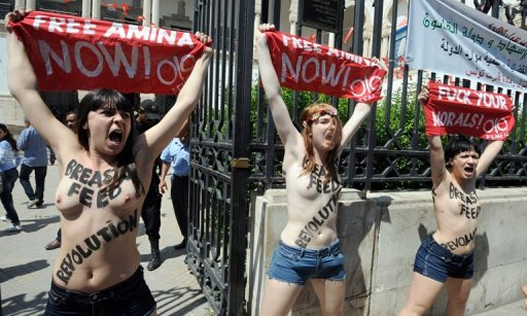

پذيرش > سایت نوشته ها > تغییر معنای برهنگی / پای صحبت الکساندرا شفچنکو، یکی از سه رهبر اصلی گروه (...)


 تغییر معنای برهنگی / پای صحبت الکساندرا شفچنکو، یکی از سه رهبر اصلی گروه فمن تغییر معنای برهنگی / پای صحبت الکساندرا شفچنکو، یکی از سه رهبر اصلی گروه فمن
18 خرداد 1392 - اکبر فلاحزاده - نسخه قابل چاپ
جنبش فمن که سال ۲۰۰۸ در اوکراین شروع شد، حالا ابعاد جهانی پیدا کرده است.
آنها تاکنون اقدامات زیادی کردهاند:
فوریه ۲۰۱۱ جلوی سفارت ایتالیا در کیف علیه زنبارگی سیلویو برلوسکونی تظاهرات کردند. سه ماه بعد علیه قاچاق بچهها و در اکتبر ۲۰۱۱ علیه سازماندهندگان بازیهای جام ملتهای اروپا در سال ۲۰۱۲. بعد از آن که گند کار دومینیک استرواس کان (رئیس سابق صندوق بینالمللی پول) در سوء استفاده جنسی از خانم خدمتکاری در هتل در آمد، اکسیون اعتراضی در پاریس به راه انداختند. دسامبر ۲۰۱۱ به تظاهرکنندگان علیه انتخابات روسیه پیوستند. ماه ژوئیه ۲۰۱۲ هم در هامبورگ علیه فحشا تظاهرات کردند.
این جنبش هنوز جا نیفتاده و در جوامع مردسالار و حتی در میان روشنفکران نیز مخالفان فراوانی دارد، با این حال به علت ظرفیت مبارزاتی زیاد آن و استقبال بخشهایی از زنان مبارز، رفته رفته اسمش سر زبانها افتاد و به عنوان یک شیوه نوین مبارزه شناخته شد.
این جنبش هنوز راه درازی در پیش دارد، اما با از کار افتادن بعضی شیوهها یا کند شدن سلاحهای دیگر، ظهور آن یکباره همه را غافلگیر کرد و نشان داد که سرکوب همه را سرکوفته و سر افکنده نمیکند.
جنبش وال استریت، و قبل از آن جنبشهای متعدد دانشجویی برای تحصیل همگانی و مجانی و جنبش های صلح و آزادیخواهانه بر ضد جنگ و نیروگاههای اتمی غالباً خودجوش بودند، اما در مواردی راکد شدند، یا رفته رفته درهم ادغام شدند و اشکال دیگری به خود گرفتند.
جنبش فمن نیز ادامه راه جنبش فمینیستی با اشکال دیگر است. فمنها خود را فمینیست میدانند، اما همه فمینیستها خود را فمن نمیدانند. علیرغم این تفاوت هر دو علیه ستم جنسی مبارزه میکنند. روش مبارزه فمنها اما منحصر به فرد است. این روش که با مخالفتهای زیادی نیز روبهرو شده، یک حسن بزرگ دارد وآن این است که منبطق با نیازها و مقتضیات زمانه ما با مختصات ویژه ارتباطات ماهوارهای و اینترنت است. جلب نظر کردن در چنین دنیایی و اثر گذاردن بر افکار عمومی به روشهای خاص زمانه نیاز دارد. موافق و مخالف جنش فمنها بر این نکته اتفاق نظر دارند که روش مبارزاتی آنها اثرگذار و بسیار برانگیزاننده است: زنان در این شکل از مبارزه به طور علنی و به اعتراض چیزی را به جامعه مردسالار عرضه می کنند که مردان در خفا دنبالش میگردند. آنها با برهنه نمودن سینههایشان نقاب از تزویر و ریای اجتماعی برمیدارند.
گلشیفته،علیا ماجده المهدی، آمنه
قشقرقی که گلشیفته فراهانی با برهنه کردن سینهاش به راه انداخت هنوز بعد از ماهها نخوابیده است. این قشقرق و بحثهای پیرامون آن مخصوص ما نیست و تازه هم نیست. این بحثها چنان که مطرح شد چند سال پیش از اینها در میان زنان معترض اوکراینی نمودار شد و روشن است در جوامع سنتی و دینی به ویژه اسلامی، مبارزان چنین جنبشی با چه مشکلاتی روبهرو خواهند بود.
یک سال پیش از گلشیفته، علیا ماجده المهدی، دانشجوی ۲۰ ساله وبلاگنویس مصری برهنه شد تا اعتراض کند. در موج حمایت از او عده زیادی از زنان در صفحات اجتماعی اینترنت سینههایشان را برهنه کردند و در مواردی روی سینههایشان شعار نوشتند و به دنبال آن موجی از تننویسی به راه افتاد.
تازه ترین مورد در جهان اسلام آمنه، دختر نوزده ساله تونسی است. او بر بدن خود شعار “بدن من، مال من است، ناموس کسی نیست” را نوشت و تصویر خود با سینههای برهنه را در روز ۲۰ مارس در فیسبوک منتشر کرد. دیگر زنان تونسی حاضر در آن صفحه فیسبوک نیز تلاش کردند با شعارنویسی بر سینههای برهنه خود از او حمایت کنند. سلفیها برای آمنه فتوای سنگسار صادر کردند و سپس او توسط والدیناش در خانه حبس شد. گفته شد که آنها دخترشان را در یک آسایشگاه روانی بستری کردهاند و بنا به آخرین اخبار دوباره آمنه گریخته و به محیط آزاد دست یافته است.
گذشته از اسلام کلیسای مسیحی نیز روی خوشی به این جنبش نشان نداده، هر چند که واکنش خشونت بار نیز نشان نداده است.
بحث دینی به کنار، در زمینه فرهنگی نیز کار فمنها شگفتیآور بوده است. چون تاکنون پدیدههای فرهنگی در غرب تولید میشد و مورد تقلید شرق قرار میگرفت، اما در مورد جنش فمن خلاف این روند مشاهده میشود. رفتار زنان اوکراینی که از لحاظ اقتصادی و فرهنگی عقبمانده تلقی میشوند، سر مشق زنان اروپای غربی قرار میگیرد. در مورد زمینهها و نحوه شکل گیری این جنبش رسانههای آلمانی با الکساندرا شفچنکوAlexandra Schewtschenko از بنیان این جنبش گفتوگوهایی کردهاند که گزیدهای از آنها را میخوانیم:
الکساندرا شفچنکو یکی از سه رهبر اصلی گروه فمن که بیست و پنج ساله و اهل کیف اوکراین است، در گفتگو با دیسایت آلمان میگوید: “در جوانی به گذشته حسرت میخوردم. آنوقتها جوانان کمونیست برای خودشان فکر و ایده داشتند. من هم برای خودم خواب و خیالهایی داشتم، اما تحصیلم در رشته مدیریت اقتصاد راضیام نکرد.
امروز در شهرهای کوچک اوکراین کسانی که در سنین بین کودکی و بلوغ هستند کاری جز سیگار کشیدن و آبجو خوردن ندارند. چشمانداز دیگری نیست. وقتی هجده سالم شد دوستی با بعضی فعالان جنبش زنان زندگیام را عوض کرد.
او در جواب به این پرسش که فمن را چطور تعریف میکند، می گوید: “در هجده سالگی فکر می کردم فمینیسم یعنی اینکه آدم زشت لباس بپوشد، موهایش را مثل دیوانهها آرایش کند و از مردها بدش بیاید، اما حالا نظرم عوض شده. به نظرم فمینیسم یک ایدئولوژی ضروری برای همه زنان دنیاست.
معنیاش این است که راهی جز مبارزه نداریم و در این جدال به سلاحهای جنونآمیز هم متوسل میشویم. فمینیسم چیزی نیست که در کتابها بشود پیدا کرد. باید برایش جنگید. فمینیسم برای زنان جوان در اوکراین و اروپا مهم است. من اگر فمینیست نباشم، یعنی اینکه برده مردان هستم…
فمینیسم خیلی ساده یعنی اینکه زنان و مردان برابرند. زنان فقط همسرانی نیستند که پخت و پز میکنند، بلکه انسانهایی دارای همه حقوق هستند. من فمینیست شدهام تا زنان دیگر را هم فمینیست کنم.”
او به تفاوتهای طبقاتی و فرهنگی بین زنان اوکراین و اروپا نیز میپردازد: “زنان اوکراینی فقط یک هدف در زندگی دارند: شوهر پیدا کنند و چه بهتر که خارجی باشد. این زنان فقط میخواهند خانهدار باشند و به کار بیرون علاقه ندارند. برای تغییر این وضع به انقلاب نیاز است.
ما برای دستگرمی تاکنون چندتایی خرده انقلاب در رسانهها راه انداختهایم. پیش از اقدامات ما در برهنه کردن اعتراضی سینههایمان، سینه برهنه زن را فقط در مجلات سکسی برای مردان یا نیمه شبها در تلویزیون می شد تماشا کرد، اما ما جسم زن را قانونی کردهایم. حالا در روزنامههای اوکراین یا روز روشن هم در تلویزیون میشود این صحنهها را دید.”
دیسایت میپرسد: این انقلاب شما به کجا ختم میشود؟
شفچنکو: به مادرسالاری. یعنی امیدوارم که اینطور بشود.
یعنی کی؟
 نمی دانم، شاید سال ۲۰۱۷. یعنی دقیقا صد سال بعد از انقلاب اکتبری که به استیلای سیستم تزارها خاتمه داد. تا آن هنگام باید بجنگیم. نمی دانم، شاید سال ۲۰۱۷. یعنی دقیقا صد سال بعد از انقلاب اکتبری که به استیلای سیستم تزارها خاتمه داد. تا آن هنگام باید بجنگیم.
برگزاری مسابقات فوتبال جام ملتهای اروپا در اوکراین صحنه مناسبی بود برای مطرح شدن فمنها. برگزاری چنین مسابقاتی بازار فحشا را هم داغ کرد و هوسرانان را در قالب تماشاگران فوتبال راهی اوکراین نمود. مبارزه با ستم جنسی از مهمترین موضوعات مبارزه فمنهاست. آنها در این مبارزه با تنگناهای زیادی روبهرو هستند و به ویژه حضور رسانهای برایشان خیلی اهمیت دارد. به قول شفچنکو “بدون حضور رسانهای در اروپا پوتین ما را میبلعید”.
دی سایت: چه احساسی دارید هنگامی که جلوی دوربین تلویزین برهنه میشوید؟
شفچنکو: نخستین بار خیلی استرس داشتم، اما بیشتر مشکلات و احساسات قبل از این صحنه پیش میآیند . یعنی موقعی که آدم باید خودش را آماده مقابله با خانواده و دوستان کند. نخستینبار که برهنه شدم مادرم گریه کرد، جیغ کشید، گفت من آبروی خانواده را بردهام و دیگر دخترش نیستم… اما آخر من که فاحشه نیستم، یا از اینها که در کلوبهای شبانه میرقصند. مدل هم نیستم. من فمینیستم و این کار بخشی از مبارزه من است. ما فاحشه نیستیم، با فاحشگی مبارزه میکنیم. ما نمیگذاریم اوکراین فاحشهخانه اروپای غربی شود.
او در زمینه روسپیگری معتقد به مدل سوئدی است که طبق آن نه با روسپیگری، بلکه با قوادی و خرید و فروش زنان مبارزه میشود.
شفچنکو در گفتوگو با روزنامه آلمانی تاتس تعریف دقیقتری از جنبش فمن ارائه میدهد: “فمن جنبش زنانی است که به طور فیزیکی و اخلاقی مهیا شده و آمدهاند تا با پدرسالاری بجنگند و چوبش را هم بخورند، اما از پای ننشینند و مردسالاری را در قالبهای صنعت سکس، دیکتاتوری و دین برملا کنند.”
به قول شفچنکو که به مناسبت بنیانگذاری جنبش در آلمان به برلین آمده بود، “جنبش فمن را نمیشود کپی کرد، اما استراتژیهای معینی هست که باید فقط در تماس با گروه فمن اصلی کسب نمود”.
شفچنکو تاکتیک و استراتژی فمنها را “سکستریم” (Sextremis)مینامد و بر آمادگی جسمی و روحی، و قدرت انعطاف در مقابله با پلیس تاکید میکند: “فمنها همچنین خوب از پیشداوریهای جامعه مردسالار آگاهند و میدانند که بیشتر عکاسان و سردبیران از مردانند؛ مردانی که عملیات اعتراضی فمنها را سانسور یا به میل خود تفسیر میکنند.” شفچنکو به تمرینهای گروه هم اشاره میکند که از جمله میکوشند جوری ظاهر نشوند که ابژه عکاسان شوند. در عکسها نباید لبخند بزنند وهر چند عصبی هستند، عصبی جلوه نکنند. آنها همچنین تمرین می کنند چگونه فریاد بزنند تا بیشتر اثر کند.
او میگوید: “ما برهنه، اما مهاجمیم” و در پاسخ به تاتس که میپرسد چرا برهنه میشوید، میگوید: “با برهنگی میخواهیم نشان بدهیم که مسلح نیستیم. ما نظر مردم و رسانهها را با طرز اعتراضمان به خود جلب میکنیم. ما عمداً جایی و جوری ظاهر میشویم که برای مردان غیر عادی است. اینجا که ما اعتراض میکنیم خیابان است، فاحشه خانه یا مجله سکسی نیست. نیمه شب هم نیست. روز روشن واقعیت است. ما در تلویزیون هم که ظاهر شویم، به جای گفتوگو در مورد موضوعات جامعه مصرفی مانند اتومبیل فراری یا آبجو و غیره، از مسائل سیاسی حرف میزنیم. ما با برهنه شدنمان معنی برهنگی را تغییر میدهیم. ما بدنمان را پنهان نمیکنیم و از چیزی نمیترسیم و شرم نمیکنیم . نمیتوانیم دنیا را از امروز تا فردا زیرو رو کنیم، اما همین برخورد خشن پلیس و دستگیریهای ما نشان میدهد که ما تا آنجا که از دستمان برمی آمده تغییر ایجاد کردهایم.”
فمن ها در کنار مبارزه با ستم جنسی، با فاشیستها هم مبارزه می کنند. به قول شفچنکو مبارزه با نئونازیها در صدر مبارزه فمنها در آلمان است.
شفچنکو ادامه میدهد: “ما فقط سینههایمان را برهنه نمیکنیم، بلکه آنها را سپر میکنیم برای مبارزه با بیعدالتی در سایر زمینههای اجتماعی. برای بحثهای آزاد سیاسی هم آمادهایم. یکی از از این بحثها را روز پنجم آوریل در برلین با همکاری گروههای سیاسی دیگر برگزار کردیم.”
رادیو زمانه
ارسال به
بالاترین
،
توییتر
،
فریندفید
،
فیسبوک
در همين بخش :
 یک خبر تلخ؟ یک قانونشکنی؟ یک تصمیم بخشنامهای جدید؟ یک خبر تلخ؟ یک قانونشکنی؟ یک تصمیم بخشنامهای جدید؟
چرا بایست به سکسوالیته پرداخت؟ / نفیسه آزاد
آزارجنسی خانگی؛ «قربانی» نه، «نجات یافته»
زنان، بزرگترین بازندگان بهار عرب
سانسور از دیدگاه جنسیتی/الهه امانی
ديگر بخش ها :
طرح یک میلیون امضا
|
مقالات
|
سایت نوشته ها
|
اخبار
|
گزارش كمپين
|
گفت و گو
|
علیه سکوت
|
كوچه به كوچه
|
نامه های شما
|
گزارش ویژه
|
گفتگو با اعضا
|
ویژه سالگرد کمپین
|
تصویر برابری
|
دل آرام علی
|
تریبون
|
مقالات
|
تاریخ شفاهی
|
خارج از چارچوب
|
کتابخانه
|
درباره کمپین
|
کمپین در شهرها
|
کمپین در بند
|
صدای تغییر
|
ویژه 22 خرداد
|
لایحه حمایت از خانواده
|
گالری
|
عشا مومنی
|
امیر یعقوبعلی
|
خدیجه مقدم
|
راحله عسگری زاده و نسیم خسروی
|
پروین اردلان،جلوه جواهری، مریم حسین خواه، ناهید کشاورز
|
زینب پیغمبرزاده
|
سعیده امین، سارا ایمانیان، محبوبه حسین زاده، ناهید کشاورز و همایون نامی
|
احترام شادفر
|
نسیم سرابندی زاده،فاطمه دهدشتی
|
وبلاگ مهمان
|
پرونده خرم آباد
|
دستگیری ها
|
مریم مالک
|
پرستو اللهیاری
|
مهرنوش اعتمادی
|
سمیه رشیدی
|
Other Languages
|
همراهان
|
«فراخوان کمپین ده روز با بهاره هدایت»
| English
|